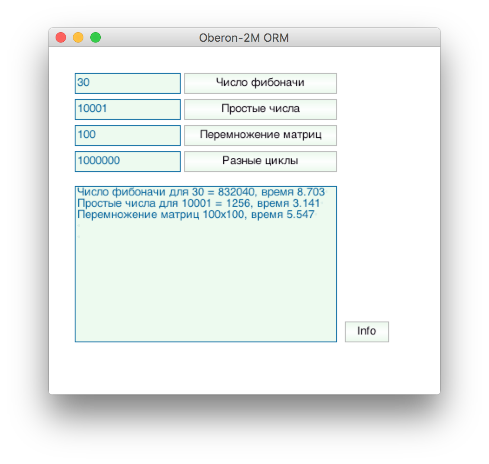
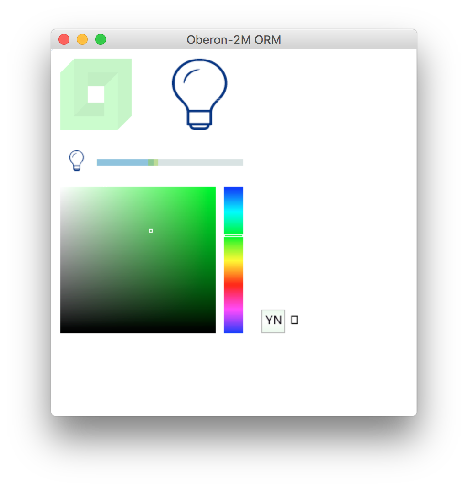
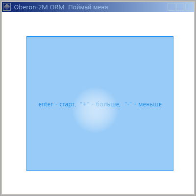

Компилятор Oberon-2M ORM умеет делать интересный фокус - берет один исходный код и превращает его в готовые программы для Windows (.exe), Linux (.elf), MacOS (.app) и даже для веба (.wasm). Причем делает это сразу, без сложных промежуточных шагов. Получается один единственный файл, который можно скопировать на любой компьютер и просто запустить. Никаких "а где у вас библиотеки?", "а почему зависимости не установились?" - только портейбл в одном файле.
Оказалось, что каждая ОС - это отдельная вселенная со своими правилами. Возьмём, к примеру, Linux и его elf-библиотеки с функциями, их составляющими. Так вот, оказывается библиотеки и функции живут в разных мирах, а связывает их загрузчик. Причём количество функций почему-то указано только в хэш-таблице. Неудивительно, что даже разработчик ELF в документации метко назвал "неочевидным решением".
С Windows всё гораздо спокойнее. PE32+ - это как аккуратно составленный рецепт: все ингредиенты на своих местах, каждый шаг логичен. Хотите добавить новую секцию? Пожалуйста. Нужно изменить точку входа? Без проблем. Даже таблица импорта ведёт себя предсказуемо - каждая функция чётко знает, из какой библиотеки она пришла. Скучновато, зато работает как часы.
А вот MacOS со своим Mach-O - это отдельная история. Здесь важно не только что в файле, но и в каком порядке. Сначала таблица импорта, потом символов, затем динамических символов, косвенных ссылок... и всё это венчает скриптовый байт-код. Самое забавное: байт-код самодостаточен, а всё остальное... ну, просто должно быть. Потому что загрузчик сказал "так надо". Видимо, в Apple очень любят многослойные структуры - не зря же их фирменный десерт называется "пай".
Казалось, самое сложное - это научиться генерировать исполняемые файлы для разных OS. Оказалось, нет. На каждой платформе свои особенности и это действительно не просто. Решение - небольшая оконная графическая библиотека SML. Как расшифровывается - не спрашивайте, просто звучит красиво. SML - платформеннонезависимая объектная библиотека окошек. Окошки легко превращаются в метки, кнопки, редактируемые поля. Бегают по экрану и о чудо могут перекрывать друг друга и даже содержать в себе другие окошки. Окошки бегают, кнопки нажимаются, поля редактируются...
Для каждой платформы свой графический порт-адаптер. В Linux это X11 и Wayland - последний, кстати, настоящее испытание. Его архитекторы явно руководствовались принципом "зачем просто, если можно сложно, но гибко". В WebAssembly графика вообще живёт своей жизнью. Всё, что рисуется на Canvas - это GUI, а всё, что выводится через console.log - это консоль. Хотя иногда кажется, что браузеры сами до конца не определились, где что должно быть.
Windows как обычно на высоте. Просто, понятно, хорошо документировано и главное прекрасно работает. В MacOS всё завязано на фреймворке Cocoa. Пришлось разбираться.
И вот, что самое интересное. Для использования Cocoa оказался не нужен Xcode. Все просто. Портировали objective-c runtime и через него по имени можно добраться до любого метода из любого фреймворка MacOS. Кстати swift в Xcode делает тоже самое, только неявно скрывая детали от программиста. Здесь просто это происходит явно и сразу статически зашивается в исполняемый файл.
Получилась гибридная линковка (да, такое возможно!). При этом несмотря на то, что все окошки рисованные кастомные, для их отрисовки используются исключительно документированные функции Cocoa. А результат должен соответствует требованиям Apple к коду. Ведь должен же?
Свои векторные шрифты через свою функцию отрисовки SVG - красиво, но векторную формы каждого символа приходится задавать вручную. Второй путь использовать системные библиотеки вроде FreeType на Linux. А третий, можно... ну, скажем так, аккуратно использовать системные шрифты, растеризовав их родными инструментами os, точно так как это делают другие приложения. Последний способ почему-то особенно хорошо работает на Windows - видимо, их система рендеринга шрифтов очень этому способствует.

А что бы проще определиться с выбором. Вот готовое тестовое приложение. Скачайте, протестируйте и уже, потом решайте:

Мало. Вот ещё одно. Скачайте, протестируйте и уже, потом решайте:

И вот совсем не о чем. Память о первом тесте кросплатформенной графической библиотечки SML. Скачать не предлагаем. При желании сами собирайте из исходника. Код неправильный и совсем не оптимизированный. Впрочем, это тоже важная часть тестового процесса. А как поведет себя компилятор, не сломается!!! Не сломался, справился достойно.